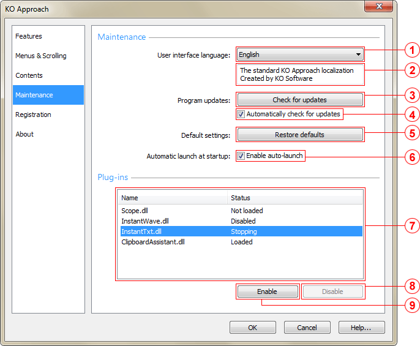

User interface language drop-down list
Specifies what language is used to display the applications's menus, windows and dialogs.
Localization info field
Shows brief information about the currently selected localization file, such as the title of the localization file and its creator.
Check for updates button
Checks if a more recent version of KO Approach is available and opens the KO Approach download page.
Automatically check for updates checkbox
Specifies whether KO Approach should periodically check for updates and display a notification when an update becomes available.
Restore defaults button
Reverts all KO Approach settings for the current user to their default values and closes the main application window.
Instructs KO Approach to run automatically after you log on to the system.
Installed plug-ins list
Lists all plug-in modules found in the Plugins subfolder of the KO Approach application directory. Each plug-in module can have one of four statuses:
Disable button
Instructs KO Approach to skip the selected plug-in from loading after the application is restarted. Sets the status of the plug-in is set to Stopping.
Enable button
Instructs KO Approach to load the selected plug-in after the application is restarted. The status of the plug-in is set to Not loaded.
Note: When KO Approach is running in the Unregistered mode, the only way to ensure that a particular plug-in will be loaded is having not more than two active plug-ins by deactivating the rest of them.